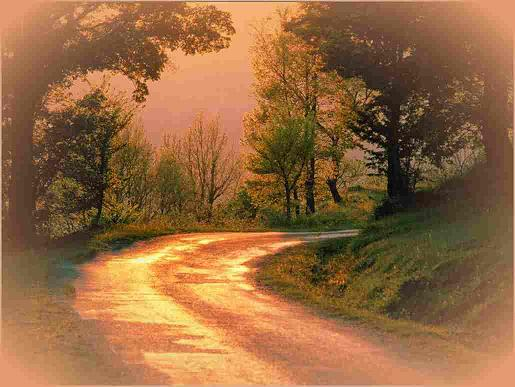

XIX LE BOIS ROSE
Au bois rose flétri chantent les messagères.
L'hiver souffle, glacé, le soleil luit, vermeil,
Et les moineaux, au seuil du jour, de la lumière,
Se cachent de la bise et saluent le soleil.
Tout est rose. Les arbres baignent de limpides
Clartés, ruissellements de joie au creux obscur
Des fourrés, d'où montent comme un rayon liquide
Les chants des ravisseurs d'azur.
Le soleil rose verse avec sa grande jarre
Des liqueurs qui les font tressaillir de bonheur.
Le vent qui voudrait bien dire son mot s'effare.
Au bois miraculeux bat le coeur du printemps.
Michel Galiana (c) 1991
XIX PINK WOOD
In the pink, withered wood messengers are warbling.
The winter's icy breath blows by red, shining sun
And the sparrows, at dawn, as the light is rising,
Shelter from the cold wind and make the sun welcome.
All is pink. The trees bathe in limpid ponds of light.
The dark thickets are lit with joyful streams of shine;
From them rise in the air, a liquid beam alike,
The songs of the thieves of blue sky.
The pink sun is pouring from its gigantic jar
Philtres that let them all thrill with joyful cheering.
The wind, who'd like so much to meddle, stays afar.
In the wondrous forest spring's heart is pulsating
Transl. Christian Souchon 01.01.2004 (c) (r) All rights reserved